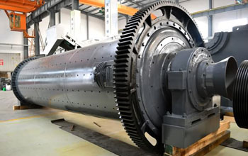

Ball mill can grind ore very many, soft, hard, brittle, toughness, ductility, and so on. The size of ball mill, type, and different types of grinding media, determines the diversity of their use. Small as a few kilograms, ranging from a few hundred tons, are within the scope of its processing capacity. And it can be adapted to large-scale production, it is adapted to the automated control of the process flow is relatively high. Ball mill grinding capacity is relatively large, the general feed 2-60mm, after grinding, product size in 0.1-0.3mm below.
Ball mill grinding process ore are mainly open-flow stream grinding and grinding ring in two ways, open-flow grinding to produce a material that is finished, the advantage is its installation and operation are relatively simple, the disadvantage is the low production capacity, product size and power consumption relatively large difference. Circle Stream grinding to produce coarse material and fine material points are two kinds of coarse material back again to continue the grinding mill, the mill until it qualified. In this way more complicated installation, technical requirements are relatively high.
Ball mill is mainly used for mixing materials, grinding fineness, product uniformity, saving power. Dry grinding can also be wet. The machine can produce different liner types needed to meet different needs. Fineness of grinding operations, relying on self-control grinding time. Ball mill with less investment than similar products, energy saving, the new structure, easy to operate, safe, stable and reliable, suitable for mixing and grinding operations general and special materials. Users can be based on the proportion of materials, hardness, and according to production and other factors considered to select the appropriate type and liner, media types.
Ball mill is in the material to be broken, and then one to smash the key equipment. Widely used in cement, silicate products, new building materials, refractory materials, fertilizer, ferrous and nonferrous metal and glass ceramics and other production industries of all kinds of ores and other grind-able materials can be dry or wet grinding.
The company's main products include wet grinding machines, dry / wet ball, center drive compact wet overflow ball mill, ball mill election gray aluminum and other products, has been widely used in electric power, petrochemical, metallurgical nearly a thousand enterprises in China enjoy a high visibility, and sold overseas. FGD wet ball mill, dry grinding equipment is the introduction of foreign advanced technology, integrated absorption and optimize the domestic mature production technology and operational experience, has developed a new generation of ball mill products, reliable performance, easy operation, low energy consumption , large output, high efficiency, has been recognized by users and applications.
Live chat with our professional customer service! Get the quotation list.
Chat Now